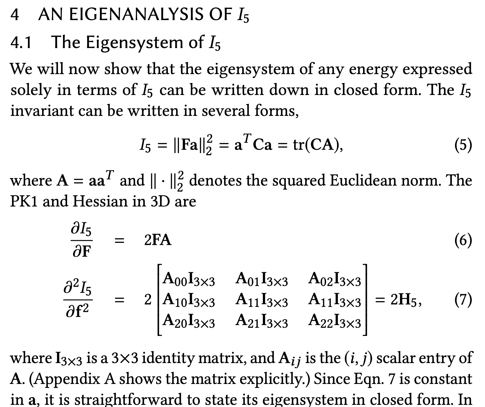
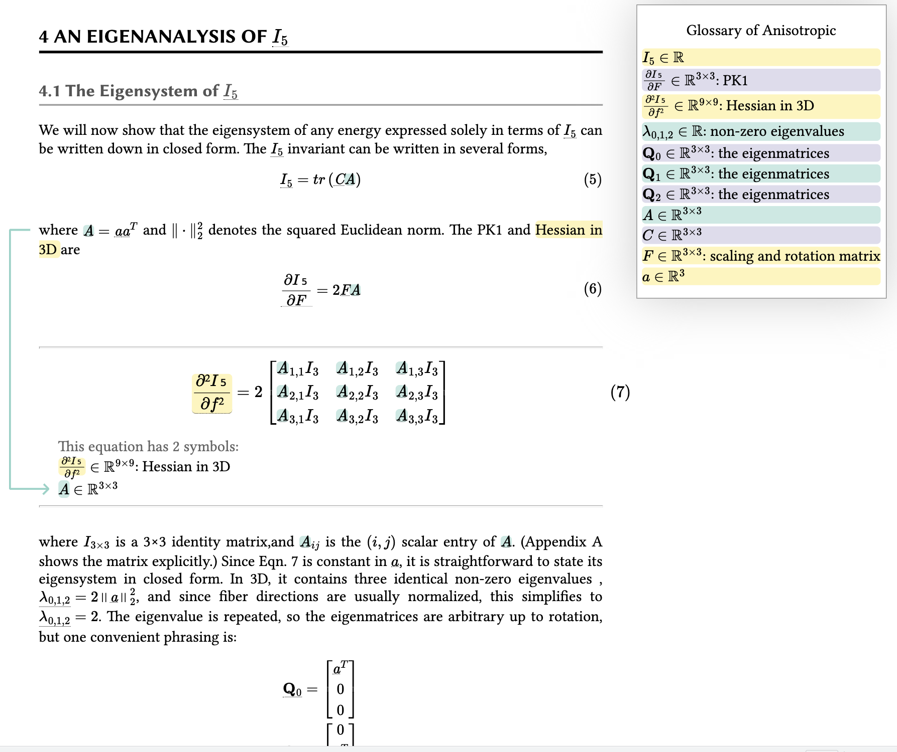

Anisotropic Elasticity for Inversion-Safety and Element Rehabilitation
Theodore Kim, Fernando de Goes and Hayley Iben
SIGGRAPH North America 2019
H❤️rtDown source
(paper section)
H❤️rtDown-generated code libraries
Existing implementation
source code
before modification
and
modified to call H❤️rtDown-generated code
Original Paper [PDF]
H❤️rtDown Paper Viewer

